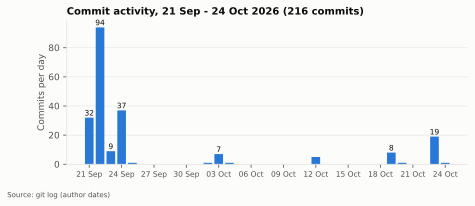
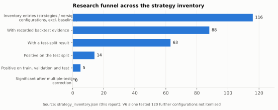
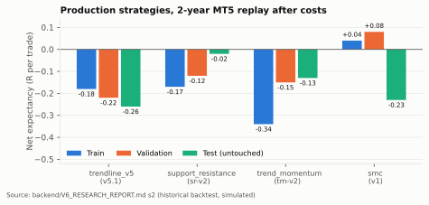
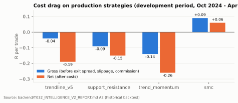
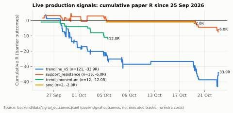
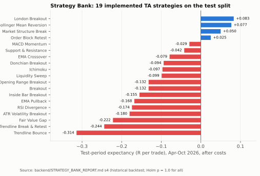
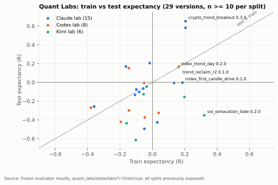
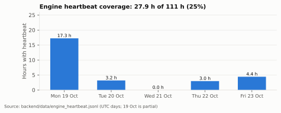

Origins, Development, Research, Challenges and Future Vision
| Author / Project Founder | Joseph Katumba |
| Repository | trading-hub · branch codex/tradeden-session-handoff · HEAD 920676d |
| Evidence cut-off | 24 October 2026 |
| Prepared by | Claude Code (claude-opus-5-5), from repository evidence only |
| Status | Official historical and strategic reference · no profitability claim is made |
Every material statement carries one of four labels:
| Label | Meaning |
|---|---|
| VERIFIED | Read directly from a repository file, git history, a local data store or the running engine's own /api/health response during this review. The source is cited. |
| RECONSTRUCTED | A historical account assembled from several sources (commit messages, reports, docstrings) where no single record states it outright. Dates come from git author dates or from dates written inside files. |
| ASSESSMENT | The reviewers' judgement on 2026-10-24, based on the cited evidence. Reasonable people could weigh it differently. |
| PROPOSAL | A recommendation or plan. Nothing labelled PROPOSAL exists today. |
Other conventions:
bbc0c08a…)/api/health, 2026-10-23 ~21:54 UTC) VERIFIEDWhat TradeDen is today ASSESSMENT. TradeDen is a single-founder, AI-assisted trading-intelligence platform built in about five weeks (first commit 2026-09-21, review 2026-10-24). It runs on one Windows laptop. A local FastAPI engine reads live MetaTrader 5 (MT5) data for 16 instruments every 30 seconds. It runs 4 production strategies, a 19-strategy "Strategy Bank" and 17 governed research models in paper mode, and it delivers signals and reports to Telegram. A Vite web app (the "Garden") visualises setups, lifecycle states and outcomes. A separate, hash-verified research laboratory (quant_labs/) lets three AI research agents (Claude, Codex and Kimi) register, evaluate and paper-trade strategies under one frozen evaluator.
The engineering is good, and better governed than most solo trading projects ASSESSMENT:
The project's own reports repeatedly and correctly decline to claim profitability.
No durable trading edge has been demonstrated VERIFIED:
trendline_v5, does worse than every one of 20 random-entry controls (backend/V6_RESEARCH_REPORT.md).backend/STRATEGY_BANK_REPORT.md).index_trend_day 0.2.0 (+0.147R, 225 trades, pooled) and crypto_trend_breakout 0.3.0 (+0.295R, 69 trades), are positive in every historical split. Neither is significant after correction, and every split had already been seen. Forward evidence for them is zero signals at the cut-off (backend/data/quant_live/signals.sqlite3).The most urgent finding is operational, not statistical VERIFIED. On 2026-10-23 the engine's /api/health reported three Telegram channels as enabled and running:
telegram_alerts.enabled: true);strategy_bank.telegram_enabled: true);From 2026-10-19 to 2026-10-23 the production notifier sent 37 trade-signal messages (28 trendline_v5, 8 support/resistance, 1 SMC) and 34 outcome follow-ups (5 targets, 29 stops). The bank sent 65 messages over the same period. Yet every internal research report from 2026-10-19 onward recommends that trendline_v5 and Trend/Momentum alerts be paused or moved to shadow. The "Telegram is DRY_RUN" description in older handoffs is accurate only for the Quant Labs research categories. ASSESSMENT Users of this Telegram channel are receiving alerts from strategies the project's own evidence shows to lose money.
Live paper outcomes agree with the backtests VERIFIED. Across distinct production confirmations since 2026-09-25 (current strategy families, excluding the retired v3 backfill and shadow records), the authoritative resolver records 37 targets and 133 stops: −53.8R over 170 resolved signals, −0.32R per signal. The independent audit found real defects in that resolver, so the exact number is not clean. Its own conservative M1 re-resolution of the verifiable subset was −0.354R per signal (audit_independent/CEO_AUDIT_REPORT.md).
Five most important discoveries
T032_INTELLIGENCE_V2_REPORT.md, MILESTONE_3_PROFITABILITY_INVESTIGATION.md]V6_RESEARCH_REPORT.md). VERIFIEDFive most urgent recommendations PROPOSAL
trendline_v5 and Trend/Momentum Telegram alerts to shadow, and relabel or pause the S/R, SMC and Strategy Bank alerts as "research, unproven". This is a CEO configuration decision; this review changed nothing.TRADING_HUB_DATA_DIR to a local, backed-up path.Scores ASSESSMENT (detail in Section 10):
| Area | Score / 10 |
|---|---|
| Overall | 5.0 |
| Engineering | 7.0 |
| Research methodology | 7.5 |
| Strategy performance | 1.5 |
| Data infrastructure | 4.5 |
| Reliability | 3.5 |
| Commercial readiness | 2.5 |
| Scalability | 3.5 |
| Long-term potential | 5.5 |
VERIFIED The review covered:
README.md, ROADMAP.md, PROJECT_LOG.md, KIMI_SESSION_HANDOFF.md, TRADEDEN_OVERNIGHT_CEO_REPORT_2026-10-23.md.docs/product-plan.md, docs/data-model.md, docs/v0.1-ui.md, docs/V2_RECOVERY.md.audit_independent/CEO_AUDIT_REPORT.md and its machine-readable outputs.quant_labs/CEO_* reports, the Codex contributions audit, the integration, resilience, M5 and M1 runbooks;notes/RESEARCH_JOURNAL.md, pre-registrations, audit JSON and results JSON;quant_labs/state/labs/{claude,codex,kimi}/{registry,experiments,performance}.jsonl and m5_*.jsonl;quant_labs/state/control.sqlite3, opened read-only;backend/data/quant_live/signals.sqlite3, opened read-only.backend/data/signal_outcomes.jsonl, strategy_bank/signals.jsonl, telegram_notifications.jsonl (counts only), engine_heartbeat.jsonl, ops/watchdog.jsonl, research/registry.json and strategy_bank/expansion_results.json.GET http://127.0.0.1:8000/api/health at about 21:54 UTC on 2026-10-23.deploy/.md, deploy/.ps1, deploy/Caddyfile*, the .env example templates, and the names and on/off values of the TRADEDEN_*_ENABLED flags (never secret values).Not examined: the "Company HQ" repository (referenced as a separate project), broker statements, and any external market or competitor data. Nothing was executed against MT5, Telegram or a broker. No production file was modified.
VERIFIED The earliest artefact is commit 425f932 "Initial commit" (2026-09-21 22:52 +03:00). It is followed within three minutes by 5c141a6 "Define Trading Hub product vision and roadmap" and by the three founding documents. No file, comment or data record dates from before 2026-09-21.
RECONSTRUCTED The founder may have traded or planned before that date. The "real MT5 trade sample" loaded on 2026-09-22 (1ae1371) implies existing MT5 trading activity. That pre-history is outside the repository and is recorded here as a gap.
| Evidence class | Key sources | Coverage | Reliability |
|---|---|---|---|
| Git history | 216 commits; branches main, codex/commercial-mvp-phase1, codex/tradeden-session-handoff, phase1-foundation-fixes, tradeden-garden | 2026-09-21 → 2026-10-24 | High for what was committed; large gaps where work stayed uncommitted for days (PROJECT_LOG.md says so) |
| Engineering reports | backend/_REPORT.md, quant_labs/.md, quant_labs/state/labs/*/ | 2026-09-24 → 2026-10-23 | High; self-reported by AI sessions, but cross-checked against stores in this review |
| Independent audit | audit_independent/ | snapshot 2026-10-19 | High; reproducible scripts and hashed inputs |
| Live signal stores | backend/data/*.jsonl (2.6 GB, gitignored) | 2026-09-22 → 2026-10-23 | Medium; 127 damaged lines quarantined, known resolver defects |
| Research ledgers | registries, control.sqlite3, results JSON | 2026-10-19 → 2026-10-23 | High; append-only, enforced by SQLite triggers |
| Engine telemetry | /api/health, heartbeat, watchdog log | 2026-10-19 → 2026-10-23 | Medium; heartbeat began only 2026-10-19 |
| Commercial | deploy/COMMERCIAL_MVP.md, PRIVATE_BETA.md, READINESS.md, backend/commercial*.py | 2026-10-12 | Code exists; never deployed |
The full register of files cited is in Appendix A. The machine-readable strategy inventory (strategy_inventory.json / .csv) accompanies this report.

VERIFIED Commits cluster on a few days: 94 on 2026-09-22, 37 on 2026-09-24 and 19 on 2026-10-23. Several multi-day gaps follow, for example 2026-09-25 → 10-02 and 10-04 → 10-12.
RECONSTRUCTED PROJECT_LOG.md states that substantial work happened in uncommitted form during those gaps: Phase 11, the Trendline v5 replacement, S/R episodes and the Garden command centre. Commit dates therefore understate how continuous the activity was. They also make precise dating of some features impossible. Where a report records its own date, that date is used.
RECONSTRUCTED The project went through five eras:
| Era | Dates | Theme | Defining question |
|---|---|---|---|
| I. Journal & dashboard | 21–23 Sep | A trader-owned analytics workspace | "How am I doing?" |
| II. Market Radar & scanner | 22–25 Sep | Live MT5 setup detection | "What is the market offering?" |
| III. Engine hardening & the Garden | 24 Sep – 12 Oct | Trustworthy data, a strategy platform, honest UI | "Can I trust what I see?" |
| IV. Signals, bank & commercial MVP | 12–20 Oct | Qualification, Telegram, 20 strategies, subscriptions | "Can this become a product?" |
| V. Governed research labs | 19–24 Oct | Frozen evaluator, three AI labs, pre-registration, paper candidates | "Does anything actually have an edge?" |
Each row gives the date, the feature, the motivation, the implementation, the outcome, the evidence and the impact. Dates are git author dates unless marked (file).
| Date | Milestone | Motivation | Implementation | Outcome | Evidence | Impact | Label |
|---|---|---|---|---|---|---|---|
| 2026-09-21 | Product vision and V0.1 dashboard | Trading data is fragmented across brokers, prop firms and journals | Vite SPA; docs/product-plan.md, data-model.md, v0.1-ui.md; GitHub Pages workflow | Dark "command centre" dashboard on seeded data | 5c141a6, 4e8791e, 29b1611 | Set the original thesis: "the trading account becomes the journal; the data becomes the coach" | VERIFIED |
| 2026-09-21 | CSV trade import and analytics engine | Real trades instead of demo data | ba037ea parser; P&L, win rate, PF, drawdown | Working journal | ba037ea, fbd8fa5, 88420d9 | First real-data capability | VERIFIED |
| 2026-09-21/22 | Post-trade review, behavioural intelligence, "Ask Trading Hub" coach | Turn history into coaching | Rule-based behaviour engine and question engine | Coach UI on a real MT5 sample | f2ac613, d9cc7f2, caa0b72, 1ae1371 | The coach is rule-based, not ML; later relabelled honestly | VERIFIED |
| 2026-09-22 01:06 | MT5 market engine and Market Radar | Move from looking back to live opportunities | Python backend over the MT5 terminal; first trendline scanner | Live scanner connected to MT5 | e071951, 7fdac17, 4b3a7bf | Pivot from journal to signal intelligence | VERIFIED |
| 2026-09-22 | Transparent setup scoring, sessions, macro panel, buy/sell direction, calculated entry/stop/target | Explainable setups | Rule-point scoring; London/NY context; optional fundamentals provider | "Radar V2" and observatory cards | 51adbf1, 712a3df, 4913451, 8d13fb7 | The score was later found to be uncalibrated (relabelled "rule pts" on 2026-10-12) | VERIFIED |
| 2026-09-22 17:42 | Trading Hub V3: trendline-first scanner and MT5 bridge (MQL5 EA) | Dependable MT5 data path | mt5/TradingHub_Bridge.mq5 | Bridge documented; engine later used the Python MT5 API directly (bridge shows OFFLINE in health) | a22e5bc, /api/health | Bridge is now vestigial | VERIFIED |
| 2026-09-22 22:42 | Confirmation gate relaxed "without weakening trendline strategy" | Too few setups confirmed | Gate change | More confirmations | 6ebf1e3 | ASSESSMENT An early instance of tuning for signal count rather than evidence | VERIFIEDASSESSMENT |
| 2026-09-23 | Analytics quality: expectancy, risk, data quality, confidence, consistency | Analytics on imported trades were overconfident | Quality and confidence layers | Risk/R shown as "Unavailable" when MT5 exports lack stops | 1d42835…a1682ed, a247241 | Start of the project's data-honesty culture | VERIFIED |
| 2026-09-24 | Phase 1 hardening: canonical port 8000, no account identifiers exposed, local-only engine, reused MT5 connection, idempotent import | Reliability and privacy | Small scoped commits | Engine safe to run locally | 0d7c608, f90b0fd, 3568001, fc42759 | Security baseline | VERIFIED |
| 2026-09-24 11:39 | Indexed observation store | Re-scanning an 81 MB JSONL on every request | jsonl_index.py | Fast reads | 6571804 | Enabled scaling to the later 1.7 GB store | VERIFIED |
| 2026-09-24 | TRADeden Garden UI | Calm, honest visual metaphor for setup lifecycles | Three.js 3D and 2D fallback; lifecycle orbs; outcome archive | Garden becomes the landing page and the brand | 39cd695 → 08f78eb | Product identity "TRADeden" | VERIFIED |
| 2026-09-24 | Strategy contract and registry; per-strategy persistence; Strategy Lab; 10-instrument universe | Run several strategies without contaminating evidence | backend/strategies/, strategy_id scoping | Multi-strategy platform | b2d3a5b, 921de55, a5bf06d, 73c6ca1 | Foundation for everything later | VERIFIED |
| 2026-09-24 | Verified MT5 broker time basis; session A/B → trendline-first-v4 | Sessions were computed from broker server time, not UTC | market_time.py; basis America/New_York+07:00 | Corrected session labels | 203bddd, 884a3cf, c5e2948, SESSION_AB_REPORT.md | Removed a systematic timestamp error | VERIFIED |
| 2026-09-24/25 | S/R and Trend/Momentum added in SHADOW, then three strategies LIVE | More setup types | Shadow → LIVE promotion | Trendline v4, S/R v1, T/M v1 live | 1099304, 5e2ca8c, 04c4b2a | Promotion was based on implementation, not on evidence of edge | VERIFIEDASSESSMENT |
| ~2026-09-25 (file) | Phase 11: T/M stop A/B → tm-pullback-v2; immutable confirmed plans | A displayed 1:79 R:R came from re-planning after confirmation | Immutable plans; evaluation layer | Plans can no longer drift | TM_STOP_AB_REPORT.md, PROJECT_LOG.md | Integrity improvement | RECONSTRUCTED |
| 2026-10-02 | Autonomous 30 s background scanning | Detect without the browser open | autonomous_market_worker | Engine scans unattended | 25b6c3c | Made Telegram possible | VERIFIED |
| 2026-10-03 | Strategy Upgrade Phase 1: shared candle confirmation, S/R v2, Trendline v5.1 (adds retest), SMC v1 | v5 confirmed breaks on the break candle with no retest | strategies/price_action.py | 180-day replay: trendline BREAK setups 2,712 → 566 | 6d4b331, STRATEGY_UPGRADE_PHASE1_REPORT.md | Fewer, cleaner setups; still unprofitable | VERIFIED |
| 2026-10-05 16:01Z (file) | OneDrive corrupts the live store | — | OneDrive sync-engine bytes written into setup_observations.jsonl at about 955 MB | 81 damaged lines plus 1 lifecycle line; readers stopped | PROJECT_LOG.md 2026-10-12 | First serious data-loss incident | VERIFIED (as reported) |
| 2026-10-12 | TRADEden V2: trade qualification at the live quote, lifecycle reclassification, verified outcomes, reconciled performance | 2 confirmations past the stop, 29 below 1.5R, 1 on a 38-hour-old tick | qualification.py, test_tradeden_v2.py | Executable R:R ≥ 1.5, quote ≤ 300 s | 71e0cff, PROJECT_LOG.md | Major quality gate | VERIFIED |
| 2026-10-12 | Integrity recovery and launch readiness | Store damage; 2,165 duplicate outcome keys | Quarantine, clean projection, recovery tool | 127 lines quarantined byte-for-byte; nothing guessed | fa651dc, deploy/READINESS.md | Evidence-preservation discipline | VERIFIED |
| 2026-10-12 | Commercial MVP Phase 1 and private-beta preparation | Path to revenue | OIDC (Auth0-compatible), PostgreSQL migration, Free/Pro entitlements, inactive $19 billing hooks, TradingView embed, Lightweight Charts | Built and tested; not deployed; billing disabled | 8d7fba6, 97c4520, deploy/COMMERCIAL_MVP.md | Commercial scaffolding exists without a validated product | VERIFIED |
| 2026-10-19 | T-031 Telegram alerts activated for production signals | Deliver signals off-dashboard | telegram_notifier.py; dedup, retry, no replay | Live alerts ON from 2026-10-19 | 114ae91, efbbf5b, TELEGRAM_T031_REPORT.md | First outward-facing output | VERIFIED |
| 2026-10-19 (file) | Signal audit; T-032 Intelligence V2; V6 research; T-033 discovery | Telegram users saw "16 confirmed, 8 stops, 0 targets" | Authoritative outcome resolver; 2-year replay lab; random-entry controls; Holm correction | All four production strategies lose after costs; 157 configurations, none significant | backend reports dated 2026-10-19 | The project's turning point: profitability disproven at current design | VERIFIED |
| 2026-10-19 | T-034/035/036 Strategy Bank (20 → unlimited), promotion gate, daily/weekly reports | Broaden the signal set | backend/strategy_bank/; promotion requires ≥ 60 forward signals, ≥ +0.05R, PF ≥ 1.10 and CEO approval | 19 working strategies, all unproven; 12 expansion configurations archived | b793cd1, 90bb095, b0bd3be, 32bc50b | ASSESSMENT Breadth was added after evidence showed no depth | VERIFIED |
| 2026-10-19 | Independent CEO audit | Verify dashboard losses and resolver | Isolated replay; 7 adversarial probes | 5 P1 resolver defects; current families −0.354R on the verifiable subset | audit_independent/ | Critical, reproducible quality evidence | VERIFIED |
| 2026-10-20 (file) | Three independent Quant Labs and frozen evaluator bbc0c08a… | Prevent self-certification and evaluator drift | quant_labs/; SQLite triggers prevent updates or deletes | Codex, Claude and Kimi labs | quant_labs/CEO_IMPLEMENTATION_REPORT.md | Strongest research-governance asset | VERIFIED |
| 2026-10-20 | Claude lab: 8 versions; index_trend_day and crypto_trend_breakout survive | — | Lab harness equals the official queue | Two survivors; 13 rejected | RESEARCH_JOURNAL.md, queue_runs/ | Only positive theme: momentum held to a time exit | VERIFIED |
| 2026-10-20 | OneDrive lock reproduced (2 of 770 renames fail in OneDrive, 0 of 778 locally); relocation tool built, not applied | Failed jobs | maintenance/relocate_runtime.py | Tool stopped safely; the two runtime folders were refused | CEO_REPORT_INFRASTRUCTURE.md | Root cause known, still unfixed | VERIFIED |
| 2026-10-23 | Kimi lab: 3 families × 2 versions; live paper integration | Independent hypotheses | Kimi Code session | All rejected | a0fd9bf, kimi/notes/CEO_REPORT.md | — | VERIFIED |
| 2026-10-23 | Quant Labs Telegram Category A approved for the 2 paper candidates; Monday-D1 staleness fix | — | Approval file 2026-10-23b_paper_candidates_only.json | 0 genuine signals so far | 7afd025, approvals | Correctly scoped delivery | VERIFIED |
| 2026-10-23 | Pre-registered hypotheses H1–H10 (failure-inverse, gold/BTC, crypto overnight) | Avoid post-hoc mining | Specs committed before code (674ab1e, 862075e, 34bd776, bcce22a) | All rejected or inconclusive; H10 kept internal | commits; PHASE_3_STRATEGY_RESEARCH.md | Methodological maturity | VERIFIED |
| 2026-10-23 | Gold/BTC explainable intelligence; Telegram Intelligence Center; watchdog installed | Value beyond signals | backend/market_intel/; scheduled task "TradeDen Engine Watchdog" | Briefings in preview; watchdog relaunches | 1a7a5b3, 9c86fa6, 0b62511 | First non-signal product capability | VERIFIED |
| 2026-10-23 | Codex paper integration, Codex audit, Kimi phase-2 screening; strategy sieve | Consolidation | — | 17 models live in paper | 5e7ec10, STRATEGY_SIEVE_2026-10-23.md | — | VERIFIED |
| 2026-10-24 00:39 | Ignore the M5 runtime and ledger; keep relocation evidence archives | Hygiene | .gitignore | HEAD at review | 920676d | — | VERIFIED |
The brief listed candidate stages. Each is tested against the evidence below.
| Candidate stage | Exists? | Evidence | Label |
|---|---|---|---|
| Dashboard | Yes (V0.1 21 Sep; Garden 24 Sep; Markets 12 Oct) | 4e8791e, 39cd695, deploy/COMMERCIAL_MVP.md | VERIFIED |
| Technical-analysis strategies | Yes: trendline (22 Sep), S/R, T/M, SMC, and 16 bank TA strategies | backend/strategies/, backend/strategy_bank/rules.py | VERIFIED |
| Scanner | Yes; autonomous since 2 Oct | 7fdac17, 25b6c3c | VERIFIED |
| Confirmation | Yes; gate (22 Sep), shared candle confirmation (3 Oct), executable qualification (12 Oct) | 6ebf1e3, 6d4b331, 71e0cff | VERIFIED |
| Multi-timeframe | Yes; MTF context 22 Sep, H4/D1 context 24 Sep, H4/H1/M15 strategies | 1883f32, 73c6ca1 | VERIFIED |
| Backtesting | Yes, in several generations: stop_ab.py and replays (Sep), research/lab V6 (19 Oct), bank backtest, research_autonomous, frozen evaluator (20 Oct), M5 extension | reports | VERIFIED |
| Strategy bank | Yes (19 Oct) | b793cd1 | VERIFIED |
| Automated quant experiments | Yes: T-033 discovery pipeline, Quant Labs queue and workers | research/discovery.py, quant_labs/worker.py | VERIFIED |
| Market intelligence | Yes: macro fundamentals panel (22 Sep, optional provider); gold/BTC intelligence (23 Oct) | 4913451, 1a7a5b3 | VERIFIED |
| Telegram | Yes (19 Oct live; Quant Labs categories 23 Oct) | 114ae91, 9c86fa6 | VERIFIED |
| Public dashboard | Partly. GitHub Pages deployment of the early static dashboard (21 Sep). The engine-backed product has never been publicly deployed. | 29b1611, deploy/PRIVATE_BETA.md | VERIFIED |
| Subscriptions | Code only. Free/Pro entitlements and inactive $19 billing hooks. No payment provider is wired, no users. | deploy/COMMERCIAL_MVP.md | VERIFIED |
| AI-assisted R&D | Yes, and central: most reports are authored by Claude Code, Codex or Kimi sessions under "CEO directives" | report headers, AGENTS.md files | VERIFIED |
jsonl_index.py) VERIFIED.CEO_NEXT_PHASE_REPORT.md), and there are no transactions. Corruption by OneDrive was possible.strategy_id, with immutable confirmation plans VERIFIED. This prevents evidence contamination across versions. It was one of the best early decisions.[VERIFIED from code, /api/health and reports.]
+--------------------------------------------------+
| Founder's Windows laptop (single host) |
| |
IC Markets MT5 <---> | MT5 terminal (1 of 7 installs; path not pinned) |
(broker feed) | | Python MetaTrader5 API (read-only) |
| v |
| FastAPI engine 127.0.0.1:8000 (engine 0.4.0) |
| |- autonomous scan worker (30 s, 16 symbols) |
| |- 4 production strategies (LIVE) |
| |- Strategy Bank worker (19 + 1 unsupported) |
| |- Quant Labs live consumer (17 models, paper) |
| |- outcome resolver, reports scheduler |
| |- market_intel (gold/BTC, rule-based) |
| |- Telegram notifiers (3 channels) ---------->|---> Telegram Bot API
| '- JSONL + SQLite stores in OneDrive folder | (owner chat)
| ^ |
| Vite web app (localhost:5173): Garden, Markets, |
| Strategy Lab, Strategy Bank, Quant Labs, Coach |
| |
| quant_labs/ control plane: frozen evaluator, |
| SQLite ledger, bounded workers (Job Objects) |
| Watchdog scheduled task (relaunch on port down) |
+--------------------------------------------------+
(Company HQ: separate repository, reads /api/health and records; paper only)
| Layer | Components (path) | State | Label |
|---|---|---|---|
| Frontend | src/main.js, marketRadar.js, src/garden/* (Garden, Priority Watch, Strategy Lab, Strategy Bank), quantLabs.mjs, journal / coach / import modules | Running locally; production builds pass | VERIFIED |
| API / engine | backend/main.py (FastAPI), scanner.py, market_data.py, market_time.py, observations.py, outcomes.py, signal_outcomes.py, qualification.py, trade_planning.py, performance.py, strategy_lab.py, evaluation.py, reports.py | Running (engine 0.4.0) | VERIFIED |
| Strategies | backend/strategies/ (trendline v5.1, S/R v2, T/M v2, SMC v1, price_action.py) | LIVE | VERIFIED |
| Strategy Bank | backend/strategy_bank/ (rules.py, indicators.py, engine.py, telegram.py, worker.py, qualification.py, expansion.py) | Enabled, alerting | VERIFIED |
| Research (backend) | backend/research/ (lab, V6, discovery, library, bank backtest) | Offline tools | VERIFIED |
| Quant Labs | quant_labs/ (control.py, queue.py, worker.py, frozen.py, evaluation/v1, m5/, maintenance/, dashboard/) and backend/quant_live/ (model host, consumer, delivery) | Live consumer enabled; queue run by operator | VERIFIED |
| Intelligence | backend/market_intel/ | Preview generation on | VERIFIED |
| Commercial | backend/commercial.py, commercial_store.py, migrations/, deploy/Caddyfile.commercial, commercial.env.example | Code only; not deployed | VERIFIED |
| Ops | deploy/*.ps1 (supervise, health check, backup, task registration), watchdog, backend/ops | Watchdog installed; supervision scripts unused | VERIFIED |
| MT5 bridge | mt5/TradingHub_Bridge.mq5 | OFFLINE (health) | VERIFIED |
MT5 bars (M1/M15/H1/H4/D1, bid OHLC + spread + tick volume)
| fetch; drop forming bar; convert broker time -> UTC (basis America/New_York+07:00)
v
Normalised candle context ----(stale / missing / short history)----> REJECTED INPUT (logged, fails closed)
|
v
Strategy detect() ---- no pattern ----> no record (evaluation counted)
| pattern found
v
OBSERVATION (setup_observations.jsonl; lifecycle DETECTED -> DEVELOPING -> CONFIRMING)
| strategy's own confirmation rule
v
Qualification at live quote: levels valid & ordered | price not past SL/TP | quote <= 300 s old |
executable R:R >= 1.5 (spread paid) | tick-size rounding
|-- fails --> strategy_signal_valid kept, NOT confirmed (rule_evidence.qualification)
v
CONFIRMED SIGNAL (immutable plan; setup_confirmations.jsonl)
|--> Telegram notifier (if LIVE + qualified + < 10 min old)
v
Outcome resolver: first barrier on M15 with M1 tie-break, 7-day window ->
TARGET_HIT / STOP_HIT / NO_HIT / AMBIGUOUS / UNAVAILABLE (append-only revisions)
v
Performance, Strategy Lab, Garden archive, daily/weekly Telegram reports
The Strategy Bank and the Quant Labs consumer use the same candle supply with their own gates:
DETECTED -> DEVELOPING -> CONFIRMING -> CONFIRMED -> ACTIVE -> RESOLVED (TP | SL)
\ \ \ \-> NO_HIT (window ends) / AMBIGUOUS / UNAVAILABLE
\ \ '-> INVALIDATED (price crossed invalidation before confirmation)
'------------'-> EXPIRED (inactivity, replaced, or SIGNAL_WITHDRAWN since 12 Oct)
Quant Labs paper signals: DETECTED -> CONFIRMED -> ACTIVE -> TP_HIT | SL_HIT | TIME_EXIT | UNRESOLVED | DATA_CONFLICT
VERIFIED Before 2026-10-12, about 2,250 withdrawn setups were mislabelled INVALIDATED. They are now read as EXPIRED at read time. Stored records are never rewritten (PROJECT_LOG.md).
Gen 1 (Sep): replay tools (stop_ab.py, shadow_report.py) -> detection counts, no costs
Gen 2 (19 Oct): backend/research lab -> production classes replayed bar-by-bar, spread/commission/
slippage/financing, train/val/test, random-entry twins, Holm-Bonferroni
+ discovery.py registry (DISCOVERED -> ... -> PRODUCTION_CANDIDATE, test scored once)
Gen 3 (20 Oct): quant_labs frozen evaluator bbc0c08a... (hash-verified), dataset bf130602...,
lab submits intents -> trusted operator run-one -> append-only results
-> leaderboard (historical / forward never pooled) -> CEO approval file -> live paper
-> Telegram Category A only with approval + flag
+-- production notifier (setup_confirmations) --- LIVE since 2026-10-19
engine threads --+-- Strategy Bank telegram (bank opportunities) -- LIVE (flag on)
+-- reports scheduler (daily 23:00 EAT, Fri weekly) -- LIVE
+-- quant_live delivery: Cat A (2 paper candidates) -- APPROVED, 0 sent
| Cat B (research observations) -- PREVIEW only
| Cat C (gold/BTC briefings) ---- PREVIEW only
v
shared pacing (~1 msg/s) -> Bot API -> retries (429 retry_after, 5xx backoff <= 8 tries)
persistent dedup keys (signal:<id>, outcome:<id>) ; baseline-on-activation ; expire after 30 min
Implemented VERIFIED:
START TRADING HUB.bat and STOP TRADING HUB.bat start and stop the engine (loopback 8000) and the Vite dev server (5173).Prepared, not executed VERIFIED:
No host was purchased, and DNS, TLS, OIDC and PostgreSQL are unverified (deploy/PRIVATE_BETA.md, READINESS.md).
| Capability | Implemented | Planned / not done |
|---|---|---|
| Live MT5 scanning, 16 instruments | Yes | Second broker/feed, tick data |
| Production strategies | 4 LIVE | Demotion of losing ones (recommended, not done) |
| Strategy Bank | 19 scanning and alerting | Forward-evidence promotion (no strategy promoted) |
| Quant Labs | 3 labs, frozen evaluator v1, M5 extension, 17 paper models | Separate OS identities or containers per lab; independent review of results |
| Outcomes | Authoritative resolver, 7-day window | P1 fixes from independent audit; tick-level resolution |
| Telegram | Production, bank and reports live; Cat A approved | Cat B/C outbound; send-time authorisation recheck (audit) |
| Market intelligence | Gold/BTC, rule-based, preview | Macro calendar, yields, crypto derivatives data |
| Commercial | OIDC, entitlements, migrations, tier plan | Billing provider, hosting, users, legal |
| Execution | None by design | "Not planned" (ROADMAP.md) |
| Runtime outside OneDrive | Tool built and tested | Not applied |
| Deeper history | M1 runbook prepared | MaxBars raise and refresh not run |
Single points of failure
TRADING_HUB_MT5_TERMINAL_PATH is not set, with 7 MT5 installs present (overnight report).backend/data/ops/watchdog.jsonl). Recovery therefore stalls without the founder.Security weaknesses
CEO_COMPREHENSIVE_REPORT_2026-10-23.md), and 21 local commits are not yet pushed. The overnight repo audit found no secrets in tracked files. backend/.env, backend/data/, quant_labs/state/owner/ and control.sqlite3* are gitignored (verified with git check-ignore). Large evidence archives (.zip) are tracked.Scalability limits
VERIFIED The accompanying strategy_inventory.json / .csv lists 117 entries: strategies, versions and tested configurations, across five layers. One evaluation fixture and the always-long control baselines are included and flagged. V6 also tested about 120 grid configurations inside 14 families. Those appear only at family level (backend/V6_RESEARCH_REPORT.md) and are not itemised.
| Layer | Entries | Status breakdown |
|---|---|---|
| Production engine strategies (incl. retired versions) | 10 | LIVE (production engine, Telegram alerts ON): 4; SUPERSEDED: 3; RETIRED: 2; DEPRECATED: 1 |
| Strategy Bank (T-034) | 20 | EXPERIMENTAL (bank alerts ON): 16; LINKED (measures production strategy): 3; UNSUPPORTED: 1 |
| Backend research (V6/T-033 registry + T-036 expansion) | 41 | ARCHIVED: 37; DISCOVERED: 3; BACKTESTED: 1 |
| Codex H1 autonomous research | 5 | NOT_QUALIFIED: 5 |
| Quant Labs (Claude, Codex, Kimi; incl. M5, baselines, fixture) | 41 | REJECTED / ARCHIVED (preserved): 17; EXPERIMENTAL PAPER (internal monitoring): 15; SUPERSEDED (newer version in live paper): 6; PAPER CANDIDATE (experimental, alerts on): 2; INFRASTRUCTURE FIXTURE: 1 |
Total entries: 117 [VERIFIED, generated from strategy_inventory.json].

VERIFIED Five entries are positive on train, validation and test:
index_trend_day 0.1.0 and 0.2.0, which produce identical trades;crypto_trend_breakout 0.2.0 and 0.3.0, which are not independent;That is three independent ideas. None survives multiple-testing correction.
How to read the figures.
backend/data/signal_outcomes.jsonl, excluding shadow records. They are barrier outcomes: target = +planned R, stop = −1R, no extra costs, no executed orders.
| Strategy / version | Status (23 Oct) | Historical backtest (2-yr replay, after costs) | Live paper outcomes (barrier R) | Recommendation |
|---|---|---|---|---|
trendline_scanner_v1_v2 pre-v3 | DEPRECATED | – | – | Historical only. No version-tagged outcome records found for these iterations. |
trendline trendline-first-v3 | RETIRED | – | 252 sig / 230 res, +29.3R | Never merge with v5. Independent audit: 231 signals, +0.085R/signal conditional… |
trendline trendline-first-v4 | RETIRED | – | 1 sig / 1 res, -1.0R | Historical only. |
trendline_v5 trendline-first-v5 | SUPERSEDED | – | 63 sig / 63 res, -20.2R | Do not revive. |
trendline_v5 trendline-first-v5.1 | LIVE (production engine, Telegram alerts ON) | -0.19R dev (n=6,665, WR 24%, PF 0.77); test -0.26R (n=2,501); x2 cost -0.35R | 58 sig / 58 res, -13.7R | SUSPEND alerts / move to SHADOW (recommended by V6, T-032, T-034 and the indepe… |
support_resistance sr-levels-v1 | SUPERSEDED | – | 21 sig / 21 res, +2.9R | Most credible production family per independent audit (+0.316R on 17 independen… |
support_resistance sr-levels-v2 | LIVE (production engine, Telegram alerts ON) | -0.15R dev (n=522, WR 28%, PF 0.80); test -0.02R (n=175); x2 cost -0.26R | 14 sig / 14 res, -8.9R | Relabel as 'research signal, unproven' or pause alerts; keep in controlled obse… |
trend_momentum tm-pullback-v1 | SUPERSEDED | – | 1 sig / 1 res, -1.0R | Historical only. |
trend_momentum tm-pullback-v2 | LIVE (production engine, Telegram alerts ON) | -0.26R dev (n=76, WR 28%, PF 0.65); test -0.13R (n=28); x2 cost -0.34R | 12 sig / 11 res, -11.0R | SUSPEND alerts / SHADOW (V6 and audit recommendation). |
smc smc-confluence-v1 | LIVE (production engine, Telegram alerts ON) | +0.06R dev (n=133, WR 36%, PF 1.08); test -0.23R (n=51); x2 cost +0.01R | 2 sig / 2 res, -2.0R | Label research-only; failed on untouched test (V6). |
Sources: V6_RESEARCH_REPORT.md §2, T032_INTELLIGENCE_V2_REPORT.md A2, backend/data/signal_outcomes.jsonl, /api/health. [VERIFIED; recommendation = ASSESSMENT]


Per-strategy notes
Trendline v5.1 (trendline_v5, M15 entries, H1 targets) VERIFIED.
ASSESSMENT Recommendation: retire from alerting immediately. Keep it in shadow for reproducibility.
Support & Resistance v2 (sr-levels-v2) VERIFIED.
ASSESSMENT The family with the least negative evidence, but the v1 → v2 change has not helped so far. Recommendation: research label or shadow. Do not pool v1 with v2.
Trend/Momentum v2 (tm-pullback-v2) VERIFIED.
SIGNAL_AUDIT_2026-10-19.md).ASSESSMENT Target geometry is mismatched to the horizon. Recommendation: suspend alerts and redesign the target/horizon before any further test.
SMC Confluence v1 (smc-confluence-v1) VERIFIED.
ASSESSMENT Recommendation: research label only.
Retired lines VERIFIED.
VERIFIED Twenty specified strategies:
Each strategy has written entry, stop, target and invalidation rules (rules.SPECS). The bank has:
The historical test covers two years with chronological splits, realistic costs and financing, and Holm–Bonferroni correction across 19 strategies. The figures below are the bank report's own (secondary evidence, not rerun in this review).

| Strategy | TF | Trades | Win | Exp R | Train | Val | Test | x2 cost | Fwd paper sig / R | Status |
|---|---|---|---|---|---|---|---|---|---|---|
| Trendline Break & Retest | M15 | 2,153 | 25% | -0.203 | -0.139 | -0.270 | -0.244 | -0.371 | – | LINKED (measures production strategy) |
| Trendline Bounce | M15 | 8,076 | 24% | -0.232 | -0.186 | -0.228 | -0.314 | -0.435 | – | LINKED (measures production strategy) |
| Support & Resistance (linked) | M15 | 697 | 30% | -0.130 | -0.176 | -0.130 | -0.042 | -0.253 | – | LINKED (measures production strategy) |
| Breakout Trading | H1 | 1,882 | 34% | -0.053 | -0.040 | +0.003 | -0.132 | -0.126 | 6 / -6.0R | EXPERIMENTAL |
| EMA Crossover | H1 | 2,327 | 32% | -0.097 | -0.110 | -0.091 | -0.079 | -0.183 | 8 / -5.0R | EXPERIMENTAL |
| EMA Pullback | H1 | 5,293 | 32% | -0.103 | -0.095 | -0.054 | -0.168 | -0.178 | 16 / +2.0R | EXPERIMENTAL |
| RSI Divergence | H1 | 895 | 33% | -0.062 | -0.055 | +0.034 | -0.174 | -0.132 | – | EXPERIMENTAL |
| MACD Momentum | H1 | 4,318 | 34% | -0.033 | -0.048 | -0.009 | -0.029 | -0.097 | 10 / -4.0R | EXPERIMENTAL |
| Bollinger Band Mean Reversion | H1 | 774 | 56% | +0.032 | +0.009 | +0.029 | +0.077 | -0.024 | 1 / +0.7R | EXPERIMENTAL |
| Donchian Channel Breakout | H1 | 6,745 | 33% | -0.051 | -0.043 | -0.021 | -0.094 | -0.111 | 22 / -10.0R | EXPERIMENTAL |
| London Session Breakout | M15 | 4,198 | 42% | +0.004 | +0.042 | -0.150 | +0.083 | -0.031 | 3 / -1.9R | EXPERIMENTAL |
| Opening Range Breakout | M15 | 1,341 | 47% | +0.003 | +0.035 | +0.100 | -0.132 | -0.011 | 2 / -1.7R | EXPERIMENTAL |
| VWAP Reversion | - | – | – | – | – | – | – | – | – | UNSUPPORTED |
| Liquidity Sweep | H1 | 2,873 | 32% | -0.078 | -0.047 | -0.114 | -0.099 | -0.153 | 8 / -5.0R | EXPERIMENTAL |
| Fair Value Gap | H1 | 876 | 34% | -0.024 | +0.062 | -0.014 | -0.222 | -0.074 | 5 / +1.0R | EXPERIMENTAL |
| Order Block Retest | H1 | 717 | 35% | -0.002 | -0.087 | +0.164 | +0.025 | -0.086 | – | EXPERIMENTAL |
| Market Structure Break | H1 | 1,425 | 36% | +0.008 | -0.022 | +0.022 | +0.050 | -0.052 | 3 / -1.0R | EXPERIMENTAL |
| Inside Bar Breakout | H1 | 5,717 | 32% | -0.100 | -0.090 | -0.059 | -0.155 | -0.183 | 5 / -2.0R | EXPERIMENTAL |
| ATR Volatility Breakout | H1 | 5,816 | 33% | -0.069 | -0.045 | +0.003 | -0.180 | -0.135 | 14 / -11.0R | EXPERIMENTAL |
| Ichimoku Trend Following | H1 | 5,050 | 33% | -0.075 | -0.079 | -0.037 | -0.097 | -0.149 | 11 / -5.0R | EXPERIMENTAL |
Historical columns: STRATEGY_BANK_REPORT.md §4 (2-yr backtest, Holm p = 1.0 for every strategy). Forward column: strategy_bank/signals.jsonl, 19–23 Oct 2026, hypothetical barrier R. Linked #1–3 forward records are counted under production. VERIFIED
VERIFIED Bank forward paper record (backend/data/strategy_bank/signals.jsonl, 2026-10-19 → 2026-10-23, hypothetical barrier R):
The T-036 expansion tested 6 more literature-based families in 12 pre-registered configurations: FX session momentum, weekend gap fade, Turtle Soup, Heikin-Ashi, KAMA and prior-close reversion. All were archived. Prior-close reversion looked strong in training (+0.30R, n = 171) and lost on validation (−0.08R), a textbook overfitting signature.
ASSESSMENT The bank shows good engineering applied to a strategy set with no evidence of edge. It sends real alerts from strategies its own report labels "Unprofitable". Recommendation: keep the scanner, stop bank Telegram alerts, and admit strategies only through the existing promotion gate. That gate needs ≥ 60 forward signals, ≥ +0.05R, PF ≥ 1.10 and CEO approval, and should gain an uncertainty bound.
VERIFIED
research_autonomous/): 5 hypotheses (Drift48, Robust Revert, Compression Release, Shock Fade, Relative Lag) over 80 instrument cases. Every supported case is NOT_QUALIFIED, and test expectancies run from −0.087R to −0.195R.| ID | Family | Programme | Train R | Val R | Test R | Status | Note |
|---|---|---|---|---|---|---|---|
fx_session_momentum_k1.5 | fx session momentum | Strategy Bank expansion | -0.072 | – | – | ARCHIVED | Verdict: REJECTED ON TRAIN |
fx_session_momentum_k3.0 | fx session momentum | Strategy Bank expansion | -0.029 | – | – | ARCHIVED | Verdict: REJECTED ON TRAIN |
weekend_gap_k0.5 | weekend gap | Strategy Bank expansion | -0.060 | – | – | ARCHIVED | Verdict: REJECTED ON TRAIN |
weekend_gap_k1.0 | weekend gap | Strategy Bank expansion | -0.069 | – | – | ARCHIVED | Verdict: REJECTED ON TRAIN |
turtle_soup_n20 | turtle soup | Strategy Bank expansion | -0.041 | – | – | ARCHIVED | Verdict: REJECTED ON TRAIN |
turtle_soup_n55 | turtle soup | Strategy Bank expansion | -0.029 | – | – | ARCHIVED | Verdict: REJECTED ON TRAIN |
heikin_ashi_m3 | heikin ashi trend | Strategy Bank expansion | -0.125 | – | – | ARCHIVED | Verdict: REJECTED ON TRAIN |
heikin_ashi_m5 | heikin ashi trend | Strategy Bank expansion | -0.140 | – | – | ARCHIVED | Verdict: REJECTED ON TRAIN |
kama_er3 | kama trend | Strategy Bank expansion | -0.104 | – | – | ARCHIVED | Verdict: REJECTED ON TRAIN |
kama_er5 | kama trend | Strategy Bank expansion | -0.083 | – | – | ARCHIVED | Verdict: REJECTED ON TRAIN |
prior_close_reversion_k1.0 | prior close reversion | Strategy Bank expansion | +0.011 | -0.215 | – | ARCHIVED | Verdict: REJECTED ON VALIDATION |
prior_close_reversion_k1.5 | prior close reversion | Strategy Bank expansion | +0.296 | -0.080 | – | ARCHIVED | Verdict: REJECTED ON VALIDATION |
tsmom | D1 time-series momentum (weekly) | Research discovery | – | +0.011 | -0.043 (n=352) | ARCHIVED | failed on test (V6 research, imported) |
trend_century | trend_century | Research discovery | – | – | – | DISCOVERED | awaiting implementation |
xsmom_fx | Cross-sectional momentum (weekly) | Research discovery | – | -0.006 | – | ARCHIVED | rejected on validation (V6 research, imported) |
ma_breakout_brock | Donchian H1 trend breakout | Research discovery | – | – | – | ARCHIVED | rejected on train (V6 research, imported) |
turtle | H4 Donchian + D1 trend | Research discovery | – | – | – | ARCHIVED | rejected on train (V6 research, imported) |
supertrend | supertrend | Research discovery | – | – | – | ARCHIVED | rejected on train |
intraday_momentum | intraday_momentum | Research discovery | – | -0.026 | – | ARCHIVED | rejected on validation |
bollinger_mr | H1 Bollinger mean reversion | Research discovery | – | +0.067 | +0.068 (n=193) | BACKTESTED | best candidate; with overnight financing (T-033 cost model)… |
rsi2 | rsi2 | Research discovery | – | +0.068 | – | ARCHIVED | failed on test |
short_term_reversal | short_term_reversal | Research discovery | – | – | – | DISCOVERED | awaiting implementation |
pairs | pairs | Research discovery | – | – | – | ARCHIVED | infrastructure: multi-leg simulation |
orb | London opening-range breakout | Research discovery | – | – | – | ARCHIVED | rejected on train (V6 research, imported) |
nr7 | nr7 | Research discovery | – | – | – | ARCHIVED | rejected on train |
williams_vb | williams_vb | Research discovery | – | +0.098 | – | ARCHIVED | failed on test |
squeeze | H1 volatility squeeze breakout | Research discovery | – | – | – | ARCHIVED | rejected on train (V6 research, imported) |
inside_bar | H4 inside-bar breakout | Research discovery | – | +0.105 | -0.173 (n=272) | ARCHIVED | failed on test (V6 research, imported) |
fx_local_hours | fx_local_hours | Research discovery | – | – | – | ARCHIVED | rejected on train |
turn_of_month | turn_of_month | Research discovery | – | – | – | ARCHIVED | rejected on train |
overnight_drift | overnight_drift | Research discovery | – | – | – | ARCHIVED | rejected on train |
weekend_effect | weekend_effect | Research discovery | – | – | – | DISCOVERED | evidence of disappearance after publication |
pre_fomc | pre_fomc | Research discovery | – | – | – | ARCHIVED | data unavailable: event_calendar |
fx_carry | fx_carry | Research discovery | – | – | – | ARCHIVED | data unavailable: swap_history |
vsa_climax | vsa_climax | Research discovery | – | -0.267 | – | ARCHIVED | rejected on validation |
order_flow | order_flow | Research discovery | – | – | – | ARCHIVED | data unavailable: order_book |
cot | cot | Research discovery | – | – | – | ARCHIVED | data unavailable: cot_history |
ml_logit | ml_logit | Research discovery | – | – | – | ARCHIVED | rejected on validation |
regime_switch | regime-aware hybrid | Research discovery | – | -0.011 | – | ARCHIVED | rejected on validation (V6 research, imported) |
smc_ict | production SMC / SMC V2 | Research discovery | – | +0.083 | -0.231 (n=51) | ARCHIVED | failed on test (V6 research, imported) |
tv_repaint_warning | tv_repaint_warning | Research discovery | – | – | – | ARCHIVED | methodology note, not a strategy |
drift48 | Drift48 (H1 normalized drift) | Codex autonomous research | – | – | -0.100 (n=303) | NOT_QUALIFIED | Archived; no live adapter. |
robust_revert | Robust Revert (H1 median/MAD reversal) | Codex autonomous research | – | – | -0.195 (n=922) | NOT_QUALIFIED | Archived; no live adapter. |
compression_release | Compression Release (H1) | Codex autonomous research | – | – | -0.129 (n=803) | NOT_QUALIFIED | Archived; no live adapter. |
shock_fade | Shock Fade (H1) | Codex autonomous research | – | – | – | NOT_QUALIFIED | Archived; no live adapter. |
relative_lag | Relative Lag (BTC/ETH residual fade) | Codex autonomous research | – | – | -0.087 (n=204) | NOT_QUALIFIED | Archived; no live adapter. |
Sources: backend/data/research/registry.json, strategy_bank/expansion_results.json, CODEX_CONTRIBUTIONS_AUDIT_2026-10-23.md. Empty cells = not reached (rejected earlier) or not recorded. VERIFIED
bbc0c08a…)Protocol VERIFIED.
bf130602…: bid OHLC plus recorded spread for 16 symbols. M15/H1 run from August 2024; M1 has about 100,000 bars per symbol (July/August → 19 October 2026 only).The table aggregates instrument-level queue jobs weighted by trade count. It reconciles with STRATEGY_SIEVE_2026-10-23.md.

| Lab | Strategy / version | TF | Instruments | Train R (n) | Val R (n) | Test R (n) | Test stress | Pooled R (n) | Status 24 Oct |
|---|---|---|---|---|---|---|---|---|---|
| claude | index_trend_day 0.1.0 | M15 | NAS100, US500, GER40 | +0.16 (103) | +0.12 (66) | +0.16 (56) | +0.15 | +0.147 (225) | SUPERSEDED (newer version in live paper) |
| claude | crypto_trend_breakout 0.1.0 | H4 | BTCUSD, ETHUSD | -0.22 (15) | -1.01 (3) | +2.97 (2) | +2.91 | -0.018 (20) | SUPERSEDED (newer version in live paper) |
| claude | crypto_trend_breakout 0.2.0 | H4 | BTCUSD, ETHUSD | +0.20 (40) | +0.37 (12) | +0.58 (16) | +0.53 | +0.323 (68) | SUPERSEDED (newer version in live paper) |
| claude | hourly_shock_drift 0.1.0 | H1 | EURUSD, GBPUSD, GBPJPY, USDJPY, A… | -0.10 (613) | -0.13 (316) | -0.07 (328) | -0.16 | -0.100 (1257) | EXPERIMENTAL PAPER (internal monitoring) |
| claude | index_turn_of_month 0.1.0 | M15 | NAS100, US500, GER40 | -0.02 (100) | +0.20 (56) | +0.21 (55) | +0.20 | +0.099 (211) | EXPERIMENTAL PAPER (internal monitoring) |
| claude | index_gap_fade 0.1.0 | M15 | NAS100, US500, GER40 | -0.05 (37) | +0.08 (17) | -0.49 (31) | -0.51 | -0.185 (85) | EXPERIMENTAL PAPER (internal monitoring) |
| claude | crypto_trend_breakout 0.3.0 | H4 | BTCUSD, ETHUSD | +0.20 (40) | +0.17 (14) | +0.65 (15) | +0.60 | +0.295 (69) | PAPER CANDIDATE (experimental, alerts on) |
| claude | index_trend_day 0.2.0 | M15 | NAS100, US500, GER40 | +0.16 (103) | +0.12 (66) | +0.16 (56) | +0.15 | +0.147 (225) | PAPER CANDIDATE (experimental, alerts on) |
| claude | fvg_retest 0.1.0 | M15 | XAUUSD, XAGUSD, EURUSD, GBPUSD, U… | -0.08 (1666) | -0.09 (812) | -0.10 (754) | -0.20 | -0.089 (3232) | REJECTED / ARCHIVED |
| claude | pdhl_acceptance 0.1.0 | M15 | XAUUSD, XAGUSD, EURUSD, GBPUSD, U… | +0.03 (56) | -0.26 (26) | -0.43 (36) | -0.53 | -0.172 (118) | REJECTED / ARCHIVED |
| claude | session_mean_reversion 0.1.0 | M15 | XAUUSD, XAGUSD, EURUSD, GBPUSD, U… | -0.36 (327) | -0.05 (160) | -0.26 (148) | -0.37 | -0.258 (635) | REJECTED / ARCHIVED |
| claude | london_momentum 0.1.0 | M15 | XAUUSD, XAGUSD, EURUSD, GBPUSD, U… | -0.16 (186) | -0.29 (93) | +0.17 (67) | +0.14 | -0.133 (346) | REJECTED / ARCHIVED |
| claude | index_first_candle_drive 0.1.0 | M15 | NAS100, US500, GER40 | +0.19 (550) | +0.07 (284) | -0.00 (287) | -0.02 | +0.107 (1121) | REJECTED / ARCHIVED |
| claude | channel_trend_m15 0.1.0 | M15 | XAUUSD, XAGUSD, EURUSD, GBPUSD, U… | -0.06 (3186) | -0.03 (1717) | -0.07 (1619) | -0.13 | -0.053 (6522) | REJECTED / ARCHIVED |
| claude | channel_trend_m15 0.2.0 | M15 | XAUUSD, BTCUSD, ETHUSD | +0.13 (673) | -0.03 (358) | -0.01 (266) | -0.04 | +0.060 (1297) | REJECTED / ARCHIVED |
| claude | fx_fix_reversal 0.1.0 | M15 | EURUSD, GBPUSD, USDJPY, AUDUSD, N… | -0.11 (162) | -0.08 (88) | -0.13 (65) | -0.17 | -0.105 (315) | REJECTED / ARCHIVED |
| claude | london_sweep_continuation 0.1.0 | M15 | EURUSD, GBPUSD, GBPJPY, XAUUSD, B… | -0.05 (115) | – | – | – | -0.046 (115) | REJECTED / ARCHIVED |
| claude | vol_climax_acceleration 0.1.0 | M15 | EURUSD, GBPUSD, GBPJPY, XAUUSD, B… | -0.18 (406) | – | – | – | -0.181 (406) | REJECTED / ARCHIVED |
| claude | failed_orb_reversal 0.1.0 | M15 | EURUSD, GBPUSD, GBPJPY, XAUUSD, B… | -0.10 (428) | – | – | – | -0.096 (428) | REJECTED / ARCHIVED |
| claude | gold_session_drift 0.1.0 | M15 | XAUUSD | +0.21 (49) | +0.03 (19) | – | – | +0.161 (68) | REJECTED / ARCHIVED |
| claude | btc_weekend_momentum 0.1.0 | H4 | BTCUSD | -0.04 (2) | – | – | – | -0.044 (2) | REJECTED / ARCHIVED |
| claude | crypto_pullback_continuation 0.1.0 | H4 | BTCUSD, ETHUSD | +0.01 (154) | – | – | – | +0.012 (154) | REJECTED / ARCHIVED |
| claude | crypto_vol_transition 0.1.0 | H4 | BTCUSD, ETHUSD | +0.09 (31) | – | – | – | +0.089 (31) | REJECTED / ARCHIVED |
| claude | crypto_extreme_reversion 0.1.0 | H4 | BTCUSD, ETHUSD | – | – | – | – | – | REJECTED / ARCHIVED |
| claude | gold_compression_acceptance 0.1.0 | M15 | XAUUSD | +0.29 (13) | +0.59 (7) | -0.35 (5) | -0.36 | +0.245 (25) | EXPERIMENTAL PAPER (internal monitoring) |
| claude | index_orb_m5 0.1.0 | M5 | NAS100, US500, GER40 | – | – | -0.03 (145) | -0.05 | -0.026 (145) | REJECTED / ARCHIVED |
| codex | evaluation_contract_smoke 1.0.0 | H1 | – | – | – | +0.02 (53) | -0.03 | +0.023 (53) | INFRASTRUCTURE FIXTURE |
| codex | trend_reclaim_r2 0.1.0 | M15 | – | +0.16 (93) | -0.32 (44) | +0.17 (49) | +0.11 | +0.051 (186) | EXPERIMENTAL PAPER (internal monitoring) |
| codex | trend_reclaim_r3 0.1.0 | M15 | – | -0.05 (99) | -0.27 (56) | -0.37 (51) | -0.43 | -0.189 (206) | EXPERIMENTAL PAPER (internal monitoring) |
| codex | trend_reclaim_r4 0.1.0 | M15 | – | +0.04 (93) | -0.27 (56) | -0.33 (49) | -0.38 | -0.139 (198) | EXPERIMENTAL PAPER (internal monitoring) |
| codex | trend_reclaim_r5 0.1.0 | M15 | – | -0.15 (83) | -0.16 (55) | -0.30 (46) | -0.36 | -0.188 (184) | EXPERIMENTAL PAPER (internal monitoring) |
| codex | trend_reclaim_r7 0.1.0 | M15 | – | -0.38 (77) | -0.28 (50) | -0.27 (44) | -0.33 | -0.323 (171) | EXPERIMENTAL PAPER (internal monitoring) |
| codex | trend_reclaim_r9 0.1.0 | M15 | – | -0.20 (72) | -0.24 (48) | -0.42 (42) | -0.49 | -0.268 (162) | EXPERIMENTAL PAPER (internal monitoring) |
| codex | range_sweep_reversion 0.1.0 | M15 | – | -0.15 (122) | -0.15 (54) | +0.15 (52) | +0.07 | -0.080 (228) | EXPERIMENTAL PAPER (internal monitoring) |
| codex | compression_escape 0.1.0 | M15 | – | -0.05 (430) | -0.28 (242) | -0.01 (208) | -0.07 | -0.102 (880) | EXPERIMENTAL PAPER (internal monitoring) |
| kimi | london_sweep_reversal 0.1.0 | M15 | – | -0.10 (73) | -0.10 (36) | -0.61 (33) | -0.72 | -0.221 (142) | SUPERSEDED (newer version in live paper) |
| kimi | vol_exhaustion_fade 0.1.0 | M15 | – | +0.20 (82) | -0.09 (41) | -0.16 (41) | -0.25 | +0.037 (164) | SUPERSEDED (newer version in live paper) |
| kimi | opening_range_drive 0.1.0 | M15 | – | -0.04 (182) | -0.07 (107) | -0.04 (91) | -0.11 | -0.048 (380) | SUPERSEDED (newer version in live paper) |
| kimi | london_sweep_reversal 0.2.0 | M15 | – | -0.16 (26) | -0.36 (9) | -0.43 (13) | -0.55 | -0.271 (48) | EXPERIMENTAL PAPER (internal monitoring) |
| kimi | vol_exhaustion_fade 0.2.0 | M15 | – | +0.32 (53) | -0.04 (25) | -0.35 (33) | -0.44 | +0.041 (111) | EXPERIMENTAL PAPER (internal monitoring) |
| kimi | opening_range_drive 0.2.0 | M15 | – | -0.05 (85) | -0.12 (48) | -0.13 (30) | -0.21 | -0.086 (163) | EXPERIMENTAL PAPER (internal monitoring) |
Sources: official queue results (performance.jsonl, control.sqlite3), audit evidence cells (research/audit/evidence.json), lab-harness results (research/results/*.json, same frozen code), live status from backend/data/quant_live/signals.sqlite3. Baselines are always-long controls. Rejected-at-train models were not run on later splits by protocol. VERIFIED
VERIFIED Forward evidence for all 17 live paper models is zero signals. The live paper database holds 1,312 evaluation runs (1,208 complete, 104 rejected inputs), 56,079 cached candles, 0 signals, 0 outcomes and 0 notifications. The Phase 1 zero-detection audit (80/80 replays agree with live; most evaluations fell in Asian hours) shows this is expected given the short, interrupted window, not a fault.
Index Trend-Day Continuation 0.2.0 (Claude) VERIFIED.
ASSESSMENT The most credible single result in the repository, but still one hypothesis tested on exposed data, among roughly 87 cells in the cross-lab Holm family.
Crypto 20-Day Trend Breakout 0.3.0 (Claude) VERIFIED.
ASSESSMENT Consistent with published time-series momentum. It is under-powered: at 3 trades/month, confirming a +0.1–0.3R edge needs years of forward data.
| Risk | Where it applies in TradeDen | Controls in place | Residual risk |
|---|---|---|---|
| Overfitting | Version iterations after failure (crypto 0.1 → 0.3; Kimi 0.1 → 0.2; channel_trend 0.2 "train-selected" symbols; S/R v1 → v2) | Pre-registration (H1–H10), test scored once, failures registered | High for any candidate whose later version was designed after seeing earlier splits |
| Look-ahead | Forming-bar use in retired trendline v3/v4 | Closed-bar contract, causality tests with injected leak, frozen evaluator replays only completed candles | Low for current code |
| Selection bias | Promoting the best of many; dashboard archive of last 40 per strategy (produced the misleading "16 confirmed, 0 targets") | Leaderboard separates historical/forward; Holm across labs | Medium: "paper candidates" are by definition the survivors of about 100 trials |
| Data leakage | All three historical splits seen by V6, T-033 and the labs before the frozen evaluator existed | Acknowledged in every lab report | High: there is no untouched historical data until the 2022–2024 holdout is unlocked |
| Small samples | Crypto (69 trades), H10 gold (25), SMC live (2), Kimi v0.2 (48) | ⚠ < 30-trade flags | High |
| Multiple testing | ~157 V6/T-033 configurations + 19 bank + 12 expansion + ~45 lab versions + 21 diagnostics | Holm per programme; 87-cell cross-lab audit | No global correction across all programmes exists. The effective family is larger than any single report's |
| Cost model | Commission defaults to zero in production qualification; swap proxies; no historical swap or dividend data | Stress case doubles costs | Medium: indices overnight cannot be scored at all |
| Outcome measurement | P1 resolver defects (entry minute, gaps, coverage) | Independent audit, M1 tie-break | Medium until fixed |
| Survivorship / regime | Two-year window (Oct 2024 – Oct 2026) is a single macro regime sample | Regime tagging since Phase 4 | High |
ASSESSMENT
| Channel | What it sends | Code | Flag / approval | Actual activity | Status | Label |
|---|---|---|---|---|---|---|
| Production signal alerts | Confirmed, qualified signals from the 4 production strategies; TP/SL follow-ups | backend/telegram_notifier.py, signal_presentation.py | TRADEDEN_TELEGRAM_ALERTS_ENABLED=1; CEO-approved 2026-10-19 | 396 baseline records (never sent); 37 signals sent (28 trendline_v5, 8 S/R, 1 SMC) and 34 outcome follow-ups (5 TP, 29 SL; −17.6R) from 19 to 23 Oct | LIVE | VERIFIED |
| Strategy Bank alerts | Opportunities from 16 experimental bank strategies, merged per symbol/direction | backend/strategy_bank/telegram.py | TRADEDEN_STRATEGY_BANK_TELEGRAM_ENABLED=1 | 65 sent, 3 expired (19–23 Oct) | LIVE | VERIFIED |
| Daily / weekly reports | 23:00 EAT daily, Friday weekly; includes Quant Labs section | backend/reports.py | TRADEDEN_TELEGRAM_REPORTS_ENABLED=1 | Daily report files 19–23 Oct present | LIVE | VERIFIED |
| Quant Labs Cat A: qualified experimental signals | Index Trend-Day 0.2.0, Crypto Trend Breakout 0.3.0 only, labelled EXPERIMENTAL PAPER SIGNAL, with "WHY THIS SIGNAL?" and regime | backend/quant_live/ delivery | approvals/2026-10-23b_paper_candidates_only.json; quant-live Telegram flag on | 0 sent (no qualifying signal); a labelled delivery test reached the chat on 2026-10-23 | Approved, idle | VERIFIED |
| Cat B: research observations | Real-time setups from the other models, "NOT A QUALIFIED TRADING SIGNAL", no levels | intel_notifications | PENDING_research_observations_request.json | Preview only | PREVIEW / DRY-RUN | VERIFIED |
| Cat C: gold & BTC briefings | 08:00 and 15:00 EAT structure, levels, regime, conditions | backend/market_intel/ | PENDING_intel_briefings_request.json; generation flag on, outbound off | Previews generated | PREVIEW | VERIFIED |
| Research-only delivery for 3 rejected models | Compression Escape, Shock Drift, Gap Fade | — | PENDING_research_only_delivery_request.json (recommendation: decline) | none | Pending | VERIFIED |
The production format (T-031B) gives:
Quant Labs messages add the researcher, version, planned and after-cost R:R, regime at entry, a unique signal ID and the classification label.
Reliability engineering is strong:
retry_after handling and exponential back-off (≤ 8 attempts);Tests: 24 notifier tests (T-031), 16 delivery tests, 13 intelligence-notification tests.
ASSESSMENT
PROPOSAL
/api/health, 2026-10-23 ~21:54 UTC) VERIFIED| Indicator | Value |
|---|---|
| Engine | trading-hub-market-engine 0.4.0; MT5 CONNECTED; scanner READY; execution_enabled: false |
| Data freshness | FRESH; last scan 29 s old; 16 markets; scan 2.85 s; each of the 4 strategies ok on 16/16 symbols |
| Stores | setup_observations.jsonl 1.716 GB, 345,293 indexed rows, 79 unparseable lines; market_outcomes.jsonl 692 MB; setup_lifecycle.jsonl 9.8 MB; setup_confirmations.jsonl 433 KB; trade_outcomes.jsonl NOT_CREATED (no executed trades) |
| Background workers | Telegram alerts running; outcome resolver running (0 outstanding); reports running; Strategy Bank running; MT5 bridge OFFLINE (unused) |
| Uptime since start | started 21:41:03 UTC (13 minutes before the snapshot) |

VERIFIED
ASSESSMENT For a system that sends real-time alerts, availability is the weakest operational metric.
VERIFIED
| Lab | Complete | Failed | Duplicate |
|---|---|---|---|
| Codex | 19 | 3 | – |
| Claude | 6 | 2 | 1 |
| Kimi | 5 | 1 | – |
VERIFIED Historically:
CEO_REPORT_TELEGRAM_INTELLIGENCE.md).Observed deliveries are given in 5.1.
ASSESSMENT Expected Cat A volume is 2–3 a week. With uptime of about 25%, many will be missed, which also biases forward evidence toward the hours the laptop happens to be on.
The counts below are as reported by each session. This review did not rerun the suites.
| Date | Suite | Result |
|---|---|---|
| 2026-10-12 | Backend isolated | 464 → 490 OK (7 real-store skips) |
| 2026-10-12 | Frontend | 164 → 168 |
| 2026-10-12 | Browser | 2/2 |
| 2026-10-19 | Backend full (T-034) | 592 OK |
| 2026-10-19 | Frontend | 171 |
| 2026-10-23 | Backend regression | 102 |
| 2026-10-23 | Quant live + delivery | 35 |
| 2026-10-23 | Frontend | 187 |
| 2026-10-23 | Quant_labs | 44 |
| 2026-10-24 handoff | v1 / M5 / maintenance / financing | 27 / 11 / 3+2 / 6 |
VERIFIED Known non-green items on 2026-10-23: test_market_data (affected by an .env flag) and test_observation_index (a full real-store replay over 25 minutes, not completed). There are 119 test files tracked.
ASSESSMENT Coverage is broad, but suites are run piecemeal by different sessions. There is no CI on push; the GitHub workflow only deploys Pages.
VERIFIED
GAP No record of money spent on AI sessions, data or tooling was found. Cost-to-date cannot be stated.
VERIFIED
This section is deliberately unsparing ASSESSMENT unless marked.
1. Shipping signals before testing them.
2. Responding to "no edge" with "more strategies".
3. Research findings not acted on in production.
trendline_v5 and Trend/Momentum alerts: V6, T-032, T-034, the independent audit and the bank report VERIFIED.4. Running a real-time service on a laptop inside OneDrive.
5. Measuring with a flawed ruler.
6. Tight stops on M15 versus costs.
7. Exhausting the historical data.
8. Fragmented ownership across AI agents.
9. Commercial scaffolding before a product truth.
10. Security hygiene slips.
What went right, and must be preserved
These are genuinely uncommon and are TradeDen's most defensible asset ASSESSMENT.
| Offer | Evidence base today | Viability now |
|---|---|---|
| Trade signals ("follow these") | Negative expectancy for live signals | Not viable, and potentially harmful. The project's own T-033 report says TradeDen "cannot honestly market a signal service with demonstrated positive expectancy today" |
| Research-grade signal transparency ("every signal, every outcome, verified, nothing hidden") | Strong: immutable plans, verified outcomes, honest labelling | Plausible niche, but showing losing records is a hard sell |
| Market intelligence (gold/BTC structure, levels, regime, conditions, no trade calls) | Built, rule-based, explainable | Most plausible near-term paid feature |
| Trading journal and behaviour analytics (the original thesis) | Built (import, analytics, coach, risk honesty) | Crowded category; differentiation via MT5-verified honesty |
| Strategy-validation tooling ("bring your strategy, get an honest verdict") | Frozen evaluator, costs, splits, controls | Distinctive; needs packaging, multi-tenant safety and a broker-neutral data feed |
GAP The repository contains no competitor research. Without reliable sourced evidence, this report does not quote competitor prices or user numbers.
ASSESSMENT The adjacent categories are broadly known and crowded: charting platforms, Telegram/Discord signal groups, trading journals and backtesting platforms. Differentiation would rest on verifiable honesty and research discipline, not on signal performance.
Costs. Direct infrastructure would be modest: one Windows VM sized at 2 vCPU / 8 GB, managed PostgreSQL, an identity provider and a domain. The real costs are founder time and AI-session spend. The repository does not record the latter.
Customer acquisition. Acquisition for trading tools is typically through content and communities. TradeDen's credible content asset is its negative research ("why 150+ strategies failed after costs"). That is unusual and honest, but unproven as a funnel.
Regulation. Selling buy/sell calls on forex, CFDs and crypto is regulated activity in many jurisdictions. It may require investment-adviser or similar licensing. This includes the founder's region: East African time zone; Kenya's Capital Markets Authority licenses investment advisers and online forex brokers. Professional legal advice is required before charging for signals. Pure analytics, journaling and educational intelligence carry lower, but not zero, regulatory exposure. Disclaimers already in the product help but are not a licence.
Risks.
PROPOSALASSUMPTION Assumptions:
| Scenario | 12-month paying users (assumed) | MRR at month 12 | Annual infra + tooling (assumed) | Comment |
|---|---|---|---|---|
| Conservative | 0–20 | $0–380 | $2–4k | Intelligence + journal only; founder distribution; likely net cost |
| Base | 50–150 | $950–2,850 | $3–6k | Gold/BTC intelligence + journal + research transparency, organic content |
| Optimistic | 300–600 | $5,700–11,400 | $6–12k | Adds strategy-validation tooling for other traders; would need hosting off the laptop and a support process |
ASSESSMENT Whether $19/month is viable is unknown: there is no willingness-to-pay evidence. The defensible commercial path is intelligence and verification, not signals.
AI agents in every proposal below are assistants for research hygiene and operations, not oracles. No proposal assumes that an AI model can predict markets.
PROPOSAL
| Horizon | Proposal | Benefit | Complexity | Cost | Dependencies | Risks | Success metric | Priority |
|---|---|---|---|---|---|---|---|---|
| 30 days | Pause production trendline_v5 / T/M alerts; relabel S/R, SMC and bank as research; rotate bot token | Stops harm; restores credibility | Low | ~0 | CEO decision | None material | 0 alerts from Category C/D strategies | P0 |
| 30 days | Apply runtime relocation; move backend/data off OneDrive; nightly verified backup | Ends corruption and lock failures | Low–Med | ~0 | Pause OneDrive or reboot | Migration error (tool verifies hashes) | 0 lock failures for 30 days | P0 |
| 30 days | Fix resolver P1 defects; re-resolve as revisions | Trustworthy outcomes | Med | Dev time | Audit probes as regression tests | Changing historical figures (handled by revisions) | 7/7 adversarial probes pass | P0 |
| 30 days | Uptime SLO: fix watchdog suppression loop; pin MT5 terminal path; alert the founder on DOWN | Forward evidence stops being biased | Low–Med | ~0 | Task scheduler | Relaunch storms | ≥ 95% heartbeat coverage | P0 |
| 30 days | One generated status page (flags, approvals, live counts) replacing narrative handoffs | Ends stale-status confusion | Low | ~0 | /api/health, approvals | — | Single source of truth used in reports | P1 |
| 90 days | MT5 maintenance window: MaxBars unlimited, M1 refresh, unlock 2022 → Aug 2024 holdout; freeze it | Genuinely untouched historical test | Med | ~0 | Weekend window | Broker history gaps | Holdout manifest frozen and hashed | P1 |
| 90 days | Score the two paper candidates once on the untouched holdout; continue forward paper | First real out-of-sample evidence | Low | ~0 | Holdout | Disappointing result (still valuable) | Pre-registered pass/fail recorded | P1 |
| 90 days | Move engine to an always-on host (Windows VM) with CI on every push | Uptime, reproducibility | Med | ~$50–150/mo (assumption) | Relocation, secrets management | MT5 licensing/hosting terms | ≥ 99% uptime; CI green | P1 |
| 90 days | Launch Cat C gold/BTC briefings (no trade levels) to a small private group; measure engagement | First product signal without edge claims | Low | ~0 | CEO approval | Over-interpretation by readers | Weekly active readers, retention | P1 |
| 90 days | AI overfitting auditor agent: checks every new version against prior exposure, counts trials, computes a global multiple-testing family | Prevents silent p-hacking | Med | AI session cost | Ledgers | False reassurance | 100% of versions carry a trial count | P2 |
| 12 months | Data foundation: tick or contiguous M1 with real spreads, 5–10 years; broker session calendar; historical swaps; free macro calendar | Ability to detect small edges | Med–High | Data cost (unknown) | Vendor choice | Vendor bias | Data manifest with coverage ≥ 98% | P1 |
| 12 months | Decay and regime monitor agent on forward results (CUSUM / Bayesian updating), auto-demotion proposals | Faster, safer kill decisions | Med | Dev time | Forward data | Over-reaction to noise | Documented demotions with evidence | P2 |
| 12 months | Hosted private beta: journal + intelligence + verified-outcome transparency; billing via provider test mode, then live | Revenue learning | Med–High | Hosting + provider fees | OIDC tenant, PostgreSQL, legal review | Regulatory exposure; support load | 50 paying users at assumed $19 | P2 |
| 12 months | Data-quality agent: validates every bar contract (sorted, unique, OHLC sane, gaps vs calendar) before research or live use | Removes a whole failure class | Med | Dev time | Calendar | — | 0 unvalidated bars reach a strategy | P2 |
| 2028–2030 | Strategy-verification service for third parties (frozen evaluator as a product), with OS-level isolation per tenant | Distinctive, edge-independent business | High | Significant | Containers, multi-broker data, legal | Liability for verdicts; market data redistribution | Verified external submissions per month | P3 (ambitious) |
| 2028–2030 | Hypothesis-generation agents constrained by pre-registration and a global trial budget | Better research per trial | Med | AI cost | Overfitting auditor | Idea flooding (repeat of 2026 errors) | Trial budget respected; Holm-adjusted hit rate | P3 |
| 2028–2030 | Qualified signal tier only for strategies passing holdout + ≥ 12 months forward + licensing | Revenue if an edge exists | High | Legal + compliance | Evidence, licence | Edge decay; regulatory | Positive lower bound on cost-stressed forward expectancy | P3 (conditional) |
1. What is TradeDen genuinely good at today?
2. What are its biggest weaknesses?
3. What should we stop building?
4. What should we improve immediately?
5. Are we spreading development resources too thin?
6. Strategy profitability or product commercialization first?
7. Which infrastructure changes would create the greatest value?
8. Which research approaches deserve more investment?
9. What would make TradeDen valuable even without profitable signals?
10. What would make it a sustainable business?
| Dimension | Score /10 | Evidence for | Evidence against |
|---|---|---|---|
| Engineering | 7.0 | Causality tests, immutable plans, append-only stores, idempotent imports, executable qualification, many tests, bounded workers | 4+ GiB process, JSONL scale limits, no CI, piecemeal test runs, stale handoffs |
| Research methodology | 7.5 | Frozen hash-verified evaluator, pre-registration in git, random-entry controls, Holm, costs + stress, failures registered | All splits exposed; no global trial count; post-failure version iteration; selection of survivors |
| Strategy performance | 1.5 | Two insignificant positive candidates | Every production and bank strategy negative or about zero after costs; live −0.32R/signal; zero forward evidence for candidates |
| Data infrastructure | 4.5 | Verified broker time basis, validated snapshot manifests, quarantine and recovery tooling | OneDrive corruption and locks, 3-month M1, one broker, no swaps/sessions/volume/macro, resolver defects |
| Reliability | 3.5 | Robust Telegram mechanics, watchdog exists, health endpoint | ~25% uptime, watchdog suppression loop, laptop SPOF |
| Commercial readiness | 2.5 | OIDC, entitlements, tier plan, charts | No users, billing off, no hosting, no market evidence, regulatory questions, product claim unsupported |
| Scalability | 3.5 | Compute headroom (>1,000 strategies / 30 s) | Windows/MT5 coupling, single process, memory, JSONL, multi-tenant isolation absent |
| Long-term potential | 5.5 | Rare honesty and research discipline; plausible verification/intelligence niche | Crowded market; edge unproven; key-person and focus risk |
| Overall | 5.0 | A disciplined research and intelligence platform in prototype | Not yet a reliable service, not a profitable trading system, not a business |
PROPOSAL In priority order. Each is a decision for the founder; this review changed nothing.
trendline_v5 and Trend/Momentum to shadow or turn off their Telegram alerts. Relabel or pause S/R, SMC and Strategy Bank alerts. Rotate the Telegram bot token.quant_labs/maintenance/relocate_runtime.py --apply. Move backend/data out of OneDrive via TRADING_HUB_DATA_DIR, with a fresh stopped-writer backup and recovery as deploy/READINESS.md describes. Set TRADING_HUB_MT5_TERMINAL_PATH. Fix the watchdog relaunch loop.| Area | Files / records |
|---|---|
| Founding | docs/product-plan.md, docs/data-model.md, docs/v0.1-ui.md; commits 425f932, 5c141a6, 4e8791e, 29b1611 |
| Project history | PROJECT_LOG.md, ROADMAP.md, README.md, KIMI_SESSION_HANDOFF.md, TRADEDEN_OVERNIGHT_CEO_REPORT_2026-10-23.md; git log (216 commits) |
| Engine reports | backend/SESSION_AB_REPORT.md, TIMESTAMP_AUDIT_REPORT.md, TM_STOP_AB_REPORT.md, STRATEGY_UPGRADE_PHASE1_REPORT.md, TELEGRAM_T031_REPORT.md, SIGNAL_AUDIT_2026-10-19.md, T032_INTELLIGENCE_V2_REPORT.md, T033_STRATEGY_DISCOVERY_REPORT.md, V6_RESEARCH_REPORT.md, STRATEGY_BANK_REPORT.md |
| Independent audit | audit_independent/CEO_AUDIT_REPORT.md, results.json, cohort_results.json, probe_results.json, source_manifest.json |
| Deployment / commercial | deploy/README.md, COMMERCIAL_MVP.md, PRIVATE_BETA.md, READINESS.md, docs/V2_RECOVERY.md |
| Quant Labs (platform) | quant_labs/README.md, CEO_IMPLEMENTATION_REPORT.md, CEO_LIVE_ACTIVATION_REPORT.md, CEO_LIVE_OBSERVATION_REPORT.md, CEO_NEXT_PHASE_REPORT.md, CODEX_CONTRIBUTIONS_AUDIT_2026-10-23.md, docs/INTEGRATION.md, docs/ENGINE_RESILIENCE.md, docs/M5_EXTENSION.md, docs/M1_MAINTENANCE_RUNBOOK.md |
| Claude lab | quant_labs/state/labs/claude/FINAL_HANDOFF.md, CEO_COMPREHENSIVE_REPORT_2026-10-23.md, STRATEGY_SIEVE_2026-10-23.md, CEO_REPORT*.md, MILESTONE_*.md, PHASE_*.md, LIVE_SIGNAL_INTEGRATION_REPORT.md, notes/RESEARCH_JOURNAL.md, research/preregistration/, research/audit/.json, research/results/.json, research/queue_runs/.json, approvals/*.json |
| Kimi / Codex labs | quant_labs/state/labs/kimi/notes/CEO_REPORT.md, RESEARCH_JOURNAL.md; quant_labs/state/labs/{codex,kimi}/*.jsonl; research_autonomous/ |
| Ledgers (read-only) | quant_labs/state/control.sqlite3 (jobs: 30 complete, 6 failed, 1 duplicate; 45 strategy rows), quant_labs/state/shared/bf130602….json |
| Live stores (read-only, gitignored) | backend/data/signal_outcomes.jsonl, setup_*.jsonl (sizes only), strategy_bank/{signals,telegram_notifications,qualification}.jsonl, strategy_bank/{historical,expansion_results}.json, research/registry.json, telegram_notifications.jsonl (status counts only), quant_live/signals.sqlite3, engine_heartbeat.jsonl, ops/watchdog.jsonl, reports/ |
| Live engine | GET /api/health at about 2026-10-23 21:54 UTC |
| Flags (names and on/off only) | backend/.env: TRADEDEN_TELEGRAM_ALERTS_ENABLED, _STRATEGY_BANK_ENABLED, _STRATEGY_BANK_TELEGRAM_ENABLED, _TELEGRAM_REPORTS_ENABLED, _SIGNAL_OUTCOMES_ENABLED, _QUANT_LIVE_ENABLED, _QUANT_LIVE_TELEGRAM_ENABLED, _INTEL_BRIEFINGS_ENABLED: all = 1 |
| Metric | Definition used |
|---|---|
| Expectancy (R) | Mean net R per resolved trade; unresolved outcomes excluded and counted separately (never as zero) |
| Win rate | Share of resolved trades with positive net R (Quant Labs includes profitable time exits); TP share for production/bank barrier outcomes |
| Profit factor | Gross winning R / gross losing R |
| Max drawdown (R) | Largest peak-to-trough of realised cumulative R, equal planned risk per trade; excludes floating exposure; not account drawdown |
| Stress | Doubled spreads/adverse costs and no swap credit (Quant Labs); doubled costs (bank/V6) |
| Trades per month | Evaluated opportunities per calendar month in the split |
| Barrier R (live) | +planned R at target, −1R at stop, from the resolver; no extra commission/slippage |
| Pooled | Trade-weighted across train, validation and test |
historical.json exists, but the backtest was not reproduced in this review.